Portfolio 2.0. dokumentation af udvilkingen
om projektet
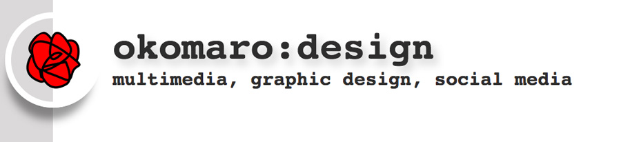Porfolio af Olga Komarova, version 2.0. http://okomaro.bplaced.net/Portfolio_2_0/.
Fra opgaven: "Den nye portfolio skal fungere som udstillingsvindue for alt det du indtil nu har arbejdet med på uddannelsen, samt fremover kunne indeholde det arbejde du kommer til at udføre i løbet af de kommende semestre. Din portfolio er dit ansigt udadtil, der viser hvem du er, og hvad du kan over for virksomheder, studiekammerater, lærere mv."
projektplanlægning
WBS- Work Breakdown structure
Milestones og detalieret beskrivelse af projektet med deadlines https://trello.com/b/ZsiD4t2M
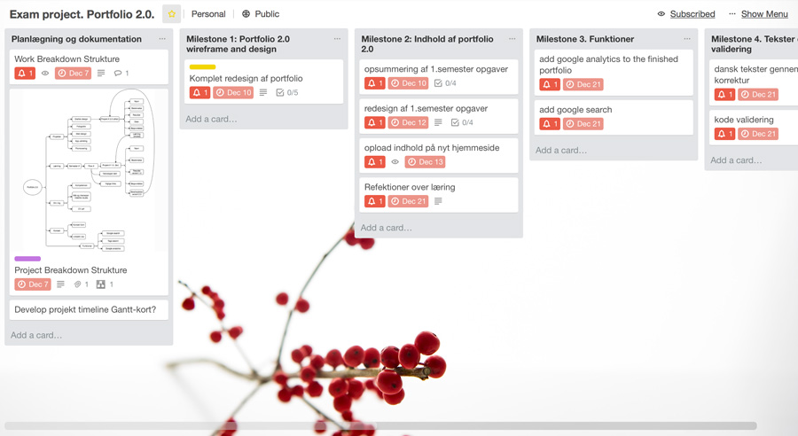Det kunne dels erstatte Gantt skema
Work Breakdown Strucrure in Trello with milestones and deadlines (.pdf)
PBS - Product Breakdownstructure
- Planlægningsdokumentation
- Hjemmeside Portfolio 2.0 - wireframes, design og struktur (HTML, CSS, javascript)
- Indhold af Portfolio 2.0 - presenation af tidligere projekter
- Remakes af tidligere projekter
- Udviklingsdokumentation
- Læringssektion tekster og andre tekster
- Brugertest
- Re-design efter brugertest
- Upload og aflevering
Gantt skema
...har ikke lavet, urealistisk med alle terminer og manglede tekniske viden..., jeg arbejde dag efter dag, for at nå deadline.
the work begins, my everyday planning
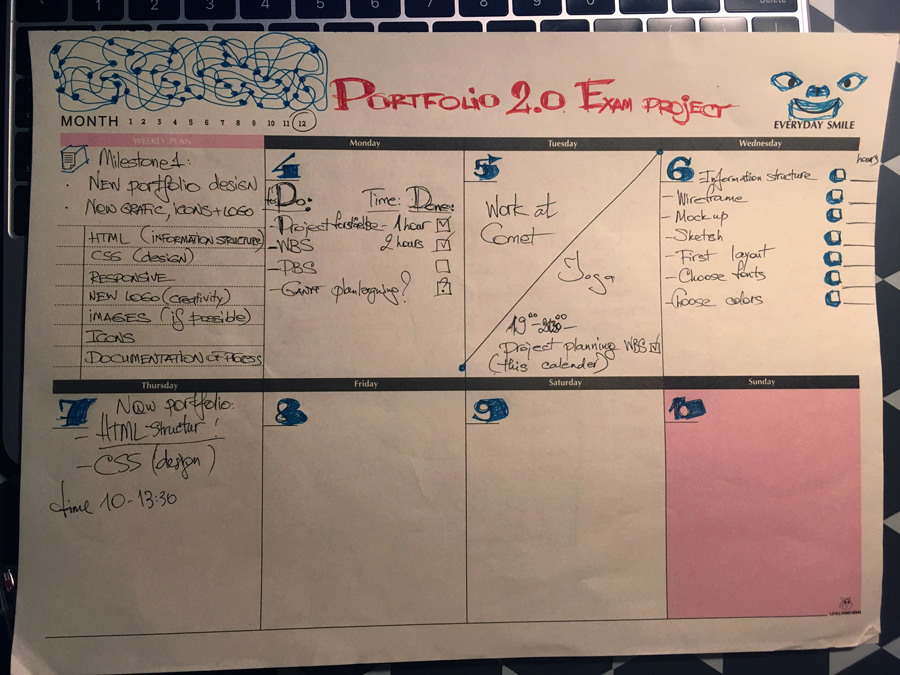
informationsarkitektur
Version sketch
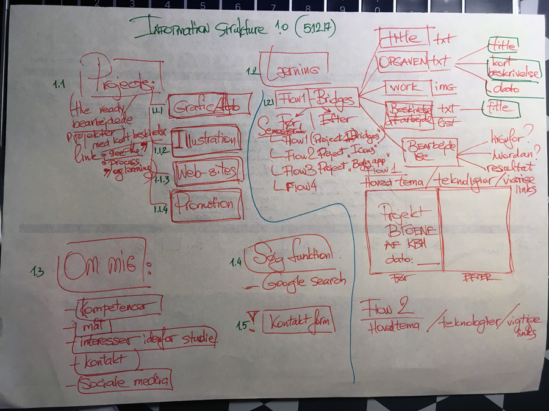
Version 1.0

til sidst jeg har ændret den meget.
begrundelse af designvalg
Designprincipper
Mål af dette portfolio - at presentere projekter og informere (alle begrundelser og beskrivelse), derfor jeg har valgt meget simpel og klar form af presentation, med nok luft.
Dette virker som en ramme, kantning til andre projekter af forskellige slags, derfor skal kun levere striktur og nem navigation. Derudover portofoliens design skal ikke destragere fra endelige projekter.
Jeg skal også huste om de overordende design prinsipper så meget så muligt:
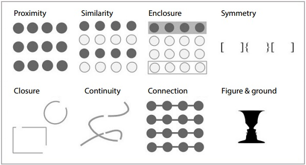Farver
Jeg har valgt at arbejde med kombination af grå, rød og sort i farver.
Rød - farvet af logo og små og vigtige elementer, der vække opmærksomhed, f.x. links er alle røde, slags tomato.
Sort på hvidt eller gråt- alle tekster for nem og hurtig læsning
Grå - til at adskille elementer i texter (background, mellem linier) (hex #efefef)
Fonts
Jeg har valgt de næste kombination af fonts:
font-family: 'Roboto Mono', monospace; - H1 heading
font-family: 'Roboto Mono', monospace; - H2 heading
font-family: 'Roboto Mono', monospace; - H3 heading
font-family: 'Roboto Mono', monospace; - H4 heading
font-family: 'Roboto Condensed', sans-serif; - aside
font-family: 'Cabin Sketch', cursive, normal; - may be logo
font-family: 'Oxygen', sans-serif; - paragraph text
links - color TOMATO
Udviklingsproces
Designskitser
har ikke lavet
Wireframes
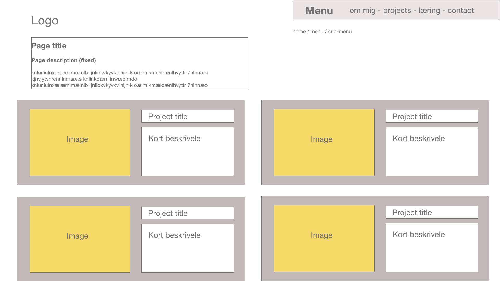 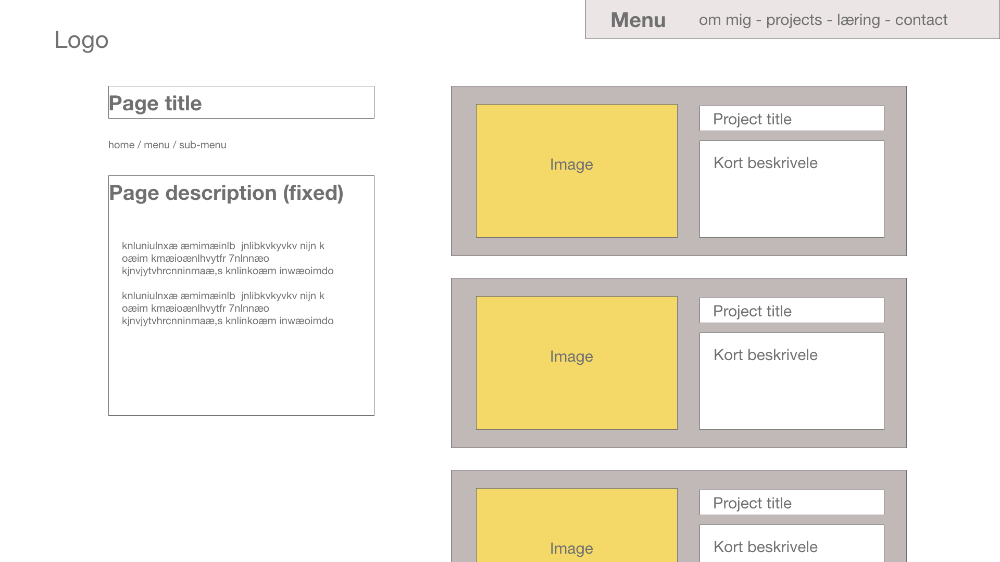 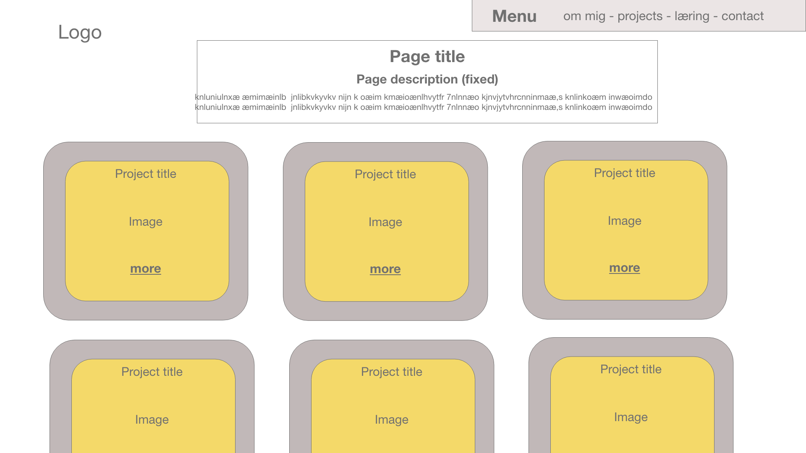Trial and efforts - build it up, then break it down
en af de første design version:
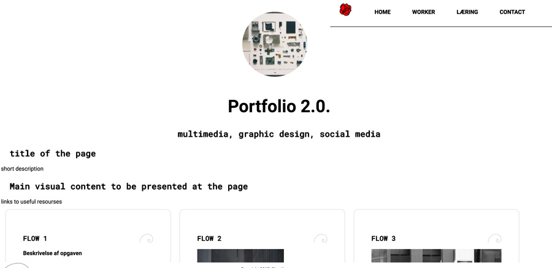 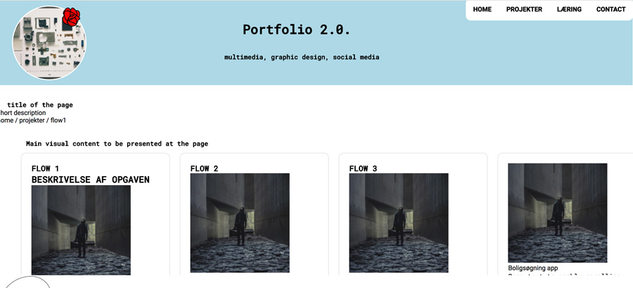using different backgrounds to find out about the real space og the boxes and how they behave
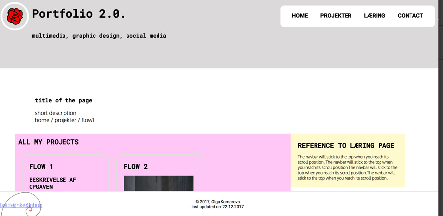nothing is clear, all is break down
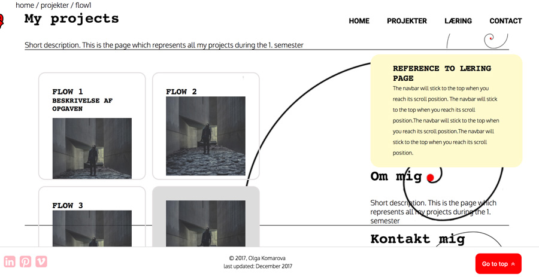getting control over elements
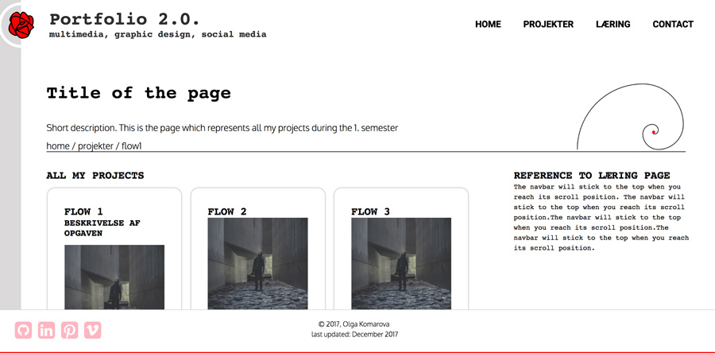checking magins and paddings again with background color
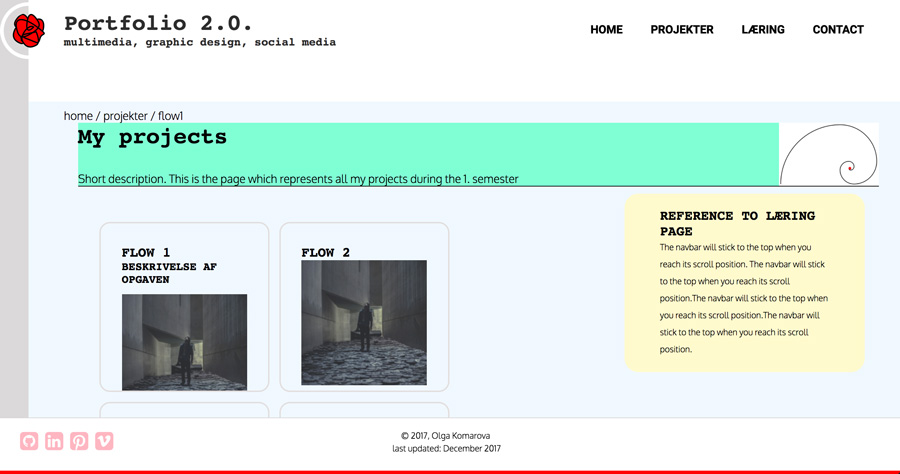sometimes via live view in dreamweaver
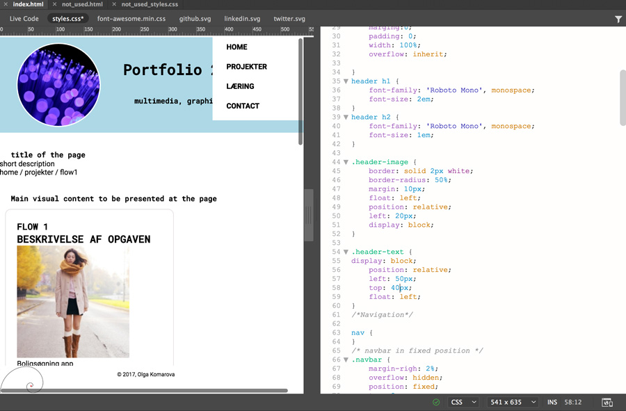all over place
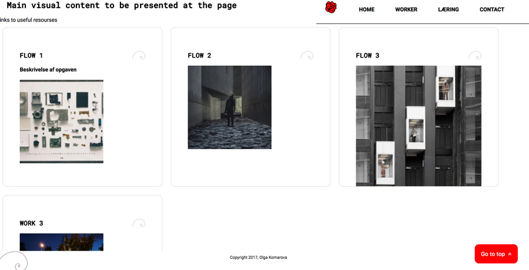This problem was a driller until I found out about z-index:99...
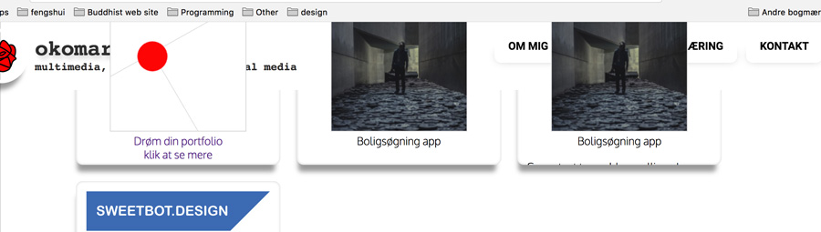and so on and so on and so on....
Opgave
Med udgangspunkt i det man har lært i løbet af 1. semester, skal man viderevikle det website, der udgør din nuværende portfolio.
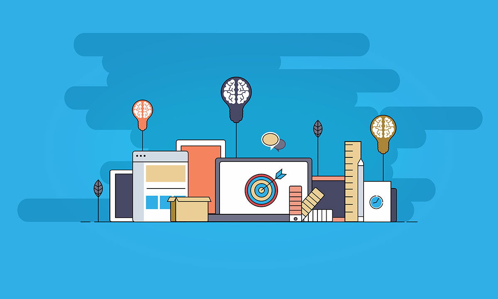Download og læs eksamensprojekt opgave.
Erhvervskompetencer
- Web design
- Digital grafisk design
- Kommunikation og brugertests
Feedback
På vej. afventet den 8.januar 2018